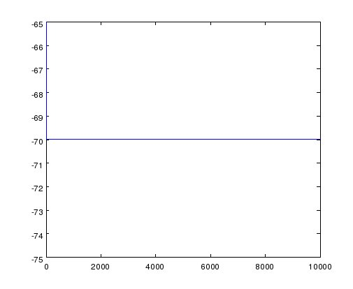
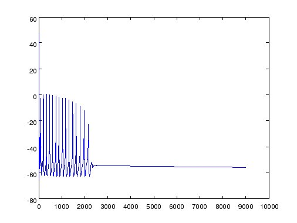

This is the readme for a matlab version of a model from the paper Herzog RI, Cummins TR, Waxman SG (2001) Persistent TTX-resistant Na+ current affects resting potential and response to depolarization in simulated spinal sensory neurons. J Neurophysiol 86:1351-64 Abstract: Small dorsal root ganglion (DRG) neurons, which include nociceptors, express multiple voltage-gated sodium currents. In addition to a classical fast inactivating tetrodotoxin-sensitive (TTX-S) sodium current, many of these cells express a TTX-resistant (TTX-R) sodium current that activates near -70 mV and is persistent at negative potentials. To investigate the possible contributions of this TTX-R persistent (TTX-RP) current to neuronal excitability, we carried out computer simulations using the Neuron program with TTX-S and -RP currents, fit by the Hodgkin-Huxley model, that closely matched the currents recorded from small DRG neurons. In contrast to fast TTX-S current, which was well fit using a m(3)h model, the persistent TTX-R current was not well fit by an m(3)h model and was better fit using an mh model. The persistent TTX-R current had a strong influence on resting potential, shifting it from -70 to -49.1 mV. Inclusion of an ultra-slow inactivation gate in the persistent current model reduced the potential shift only slightly, to -56.6 mV. The persistent TTX-R current also enhanced the response to depolarizing inputs that were subthreshold for spike electrogenesis. In addition, the presence of persistent TTX-R current predisposed the cell to anode break excitation. These results suggest that, while the persistent TTX-R current is not a major contributor to the rapid depolarizing phase of the action potential, it contributes to setting the electrogenic properties of small DRG neurons by modulating their resting potentials and response to subthreshold stimuli. Note: These MATLAB functions were created by Tom Andersson. Usage: Download and expand this archive. At the matlab prompt first cd to the newly created HerzogEtAl2001 folder then type DRGmodel After a minute or so the simulation finishes. You can view the results for example with commands like plot(Vm) which yields: FIGURE 1: Na WITHOUT TTX-R  FIGURE 2. Na WITH TTX-R and ultra-slow gate  Note that DRGmodel_all.txt contains all the matlab code in one file for easier examination.